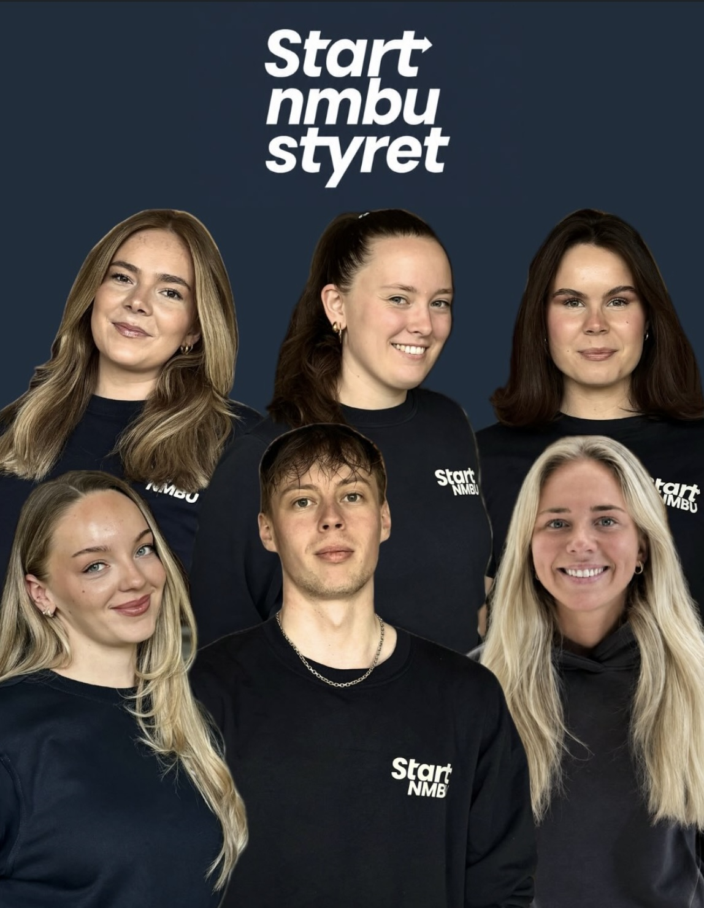
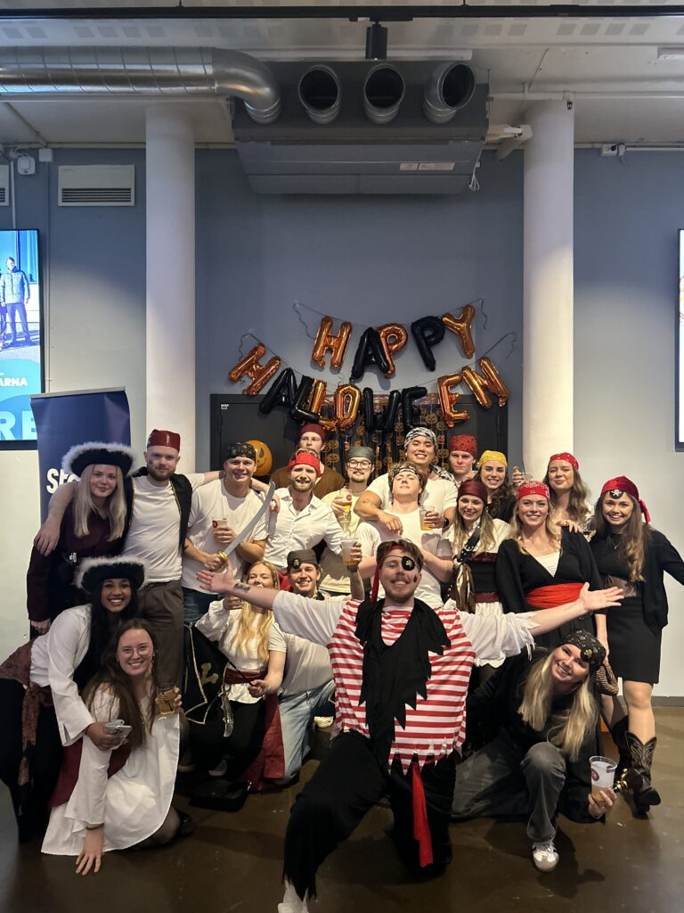

Start NMBU bygger bro mellom studenter og næringsliv.
Start NMBU er en studentorganisasjon som skal bidra til å skape et økt engasjement innenfor innovasjon og entreprenørskap blant studenter.

Hva er Start NMBU
Start NMBU er en studentorganisasjon som skal bidra til å skape et økt engasjement innenfor innovasjon og entreprenørskap blant studenter på Norges miljø- og biovitenskapelige universitet.
Vi ønsker å tilrettelegge for fremtidige gründere og bygge en bro mellom fremtidige arbeidstakere og fremtidige arbeidsgivere. Start NMBU tilbyr en tverrfaglig arena for samarbeid, kunnskapsutvikling og nettverksbygging innenfor nyskaping slik at flere forretningsideer kan realiseres.
Om oss

Møt styret i Start NMBU
Styret leder foreningen gjennom året og blir valgt på generalforsamlingen på våren.
Her finner du oversikt over de ulike rollene i styret.
Se styretInterne arrangementer
Start Forum
Hver høst møtes alle Start-lagene i Norge for et event fyllt av networking, foredrag og sosiale begivenheter.
Bedriftsbesøk og Venture Cup
I løpet av skoleåret arrangerer vi interne bedriftsbesøk for medlemmene våre i tillegg til at vi er med på Venture Cup.
Sosiale arrangementer
Hvert år organiserer vi hytteturer, julebord og andre sosiale aktiviteter som bidrar til et godt og inkluderende miljø.

Våre prosjektgrupper
Ofte stilte spørsmål
Hvordan blir jeg medlem?
Trykk på “Bli medlem” og fyll ut spørreskjemaet.
Kan jeg delta på deres arrangementer?
I løpet av året arrangerer vi flere arrangementer i samarbeid med både næringsliv og akademia, hvor studenter inviteres til å delta.
Hvor kan jeg se mer fra Start NMBU?
Du kan følge oss på Instagram og LinkedIn for innblikk i vårt arbeid og oppdateringer fra både interne og eksterne arrangementer.
Når rekrutterer dere nye medlemmer?
Vi har hovedsakelig to rekrutteringsperioder i løpet av året, vanligvis i januar og august.
Hva kreves for å bli medlem?
For å søke medlemskap i Start NMBU må du være student ved NMBU. Vi ser etter studenter med høy motivasjon, engasjement, interesse og vilje til å bidra aktivt.